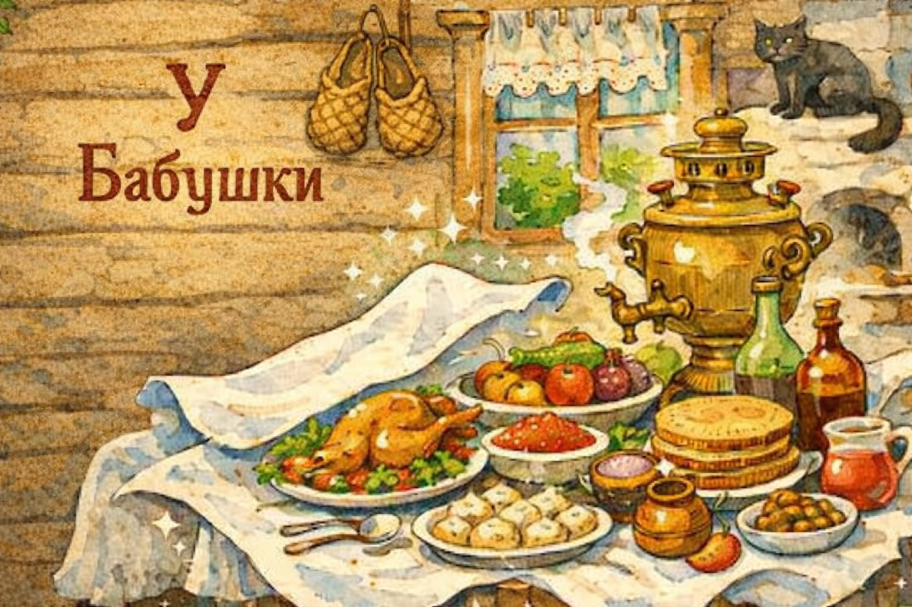
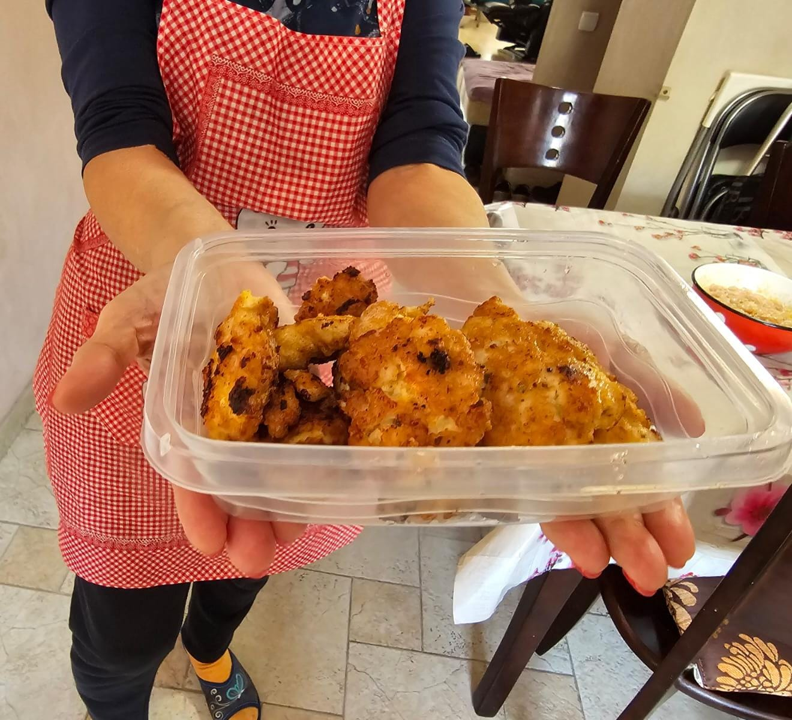
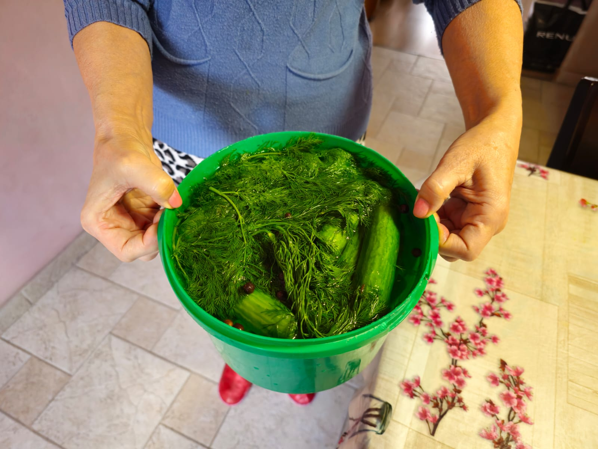

Меню
❦ ❦ ❦

Котлеты 2 2 2
★ Фирменное блюдо ★
Котлеты, легко и быстро

Курица по Еврейски
★ Магия при готовки ★
Быстро и вкусно

Соленые Огурцы
★ Супер Закуска ★
Хрустящие и вкусные
Оливье
Салат Оливье
★ Праздничный ★
Классика Нового года
Пирожки
Жареные пирожки
★ Горячие ★
Пышные и ароматные
Вареники
Вареники с картошкой
★ Со сметаной ★
Мягкое тесто и нежная начинка
❦ ❦ ❦
Котлеты 2 2 2
Ингредиенты:
- Куриная грудка - 1 кг.
- Майонез - 2 ложки
- Мука - 2 ложки
- Яйца - 2 штуки
- Соль, перец, сухой чеснок или другие приправы на вкус
Приготовление:
- Помыть грудку.
- Очистить её от сухожилия и косточек.
- Нарезать на кубики 1 на 1.
- Добавляем всё по рецепту и вымешиваем.
- Хорошо разогреваем сковородку.
- Наливаем масло до краёв чтобы не была сухая.
- Чтобы хорошо слазили котлеты нужно брать фарш мокрой ложкой.
- Чтобы быть уверенным что всё внутри приготовится, сковородку нужно накрыть крышкой.
Курица по Еврейски
Ингредиенты:
- Курица (Желательно ножки но можно и две грудки. По количеству сколько поместится на сковородку.)
- Лук — 3 шт.
- Сода
- Соль, перец
Приготовление:
- Помыть грудку.
- Очистить её от сухожилия и косточек.
- разделать курицу на куски (Кусок примерно треть грудки).
- Хорошо разогреваем сковородку.
- Наливаем масло до краёв чтобы не была сухая.
- Лук мелко нарубленный высыпаем на сковороду и жарить его до прозрачности (главное не пережаривать).
- Добавляем Пол чайной ложки соды и перемешиваем пару минут (тут произойдёт магия ☺).
- После того как лук желтеет и превратится в кашу поверх выкладываем мясо.
- Мясо сверху нужно посолить и поперчить.
- 20 минут держим в сторону не накрывая крышкой.
- Через 20 минут поворачиваем мясо на другую сторону перчим и солим и ещё на 20 минут уже с крышкой.
- Курица должна зарумянится с двух сторон.
- 20 минут держим в сторону не накрывая крышкой.
- Bon Appetit.
Соленые Огурцы
Ингредиенты:
- Тонкие огурцы
- Укроп
- Чеснок
- Соль
- Уксус
- Перец горошком
Приготовление:
- Огурцы и Укроп хорошо помыть
- Почистить чеснок побольше где-то три четверти большой головки
- После чистки чеснока каждый зубчик разрезаем пополам
- На дно ведёрко или кастрюли положить стебельки укропа
- Срезать кончики с двух сторон у всех огурцов
- Закладываем огурцы и присыпаем чесноком между слоями огурцов
- Для рассола, в отдельной кастрюле на 1 л кипятка кладём две полные столовые ложки соли и одну столовую ложку уксуса (уксус всегда только одной ложкой)
- Заливаем огурцы с укропом рассолом почти до краёв так чтобы утонули в рассоле
- Сверху посыпать 10 горошин перца
- Крышкой НЕ закрываем и даём постоять НЕ в холодильнике 2 дня
- Через 2 дня пробуем отдельно огурец разрезая его пополам. Он должен быть не сладким и немного поменять цвет
- Если по вкусу Почти готово закрываем крышкой и ставим в холодильник
- Если огурец очень сладкий и мы недосолили нужно в отдельной кастрюле развести в маленьком количестве соль в кипятке, залить и так дать постоять ещё сутки
Салат Оливье
Фото Оливье
Ингредиенты:
- Картофель — 4 шт.
- Морковь — 2 шт.
- Яйца — 4 шт.
- Огурцы — 4 шт.
- Горошек — 1 банка
- Колбаса — 300 г
- Майонез
Приготовление:
- Отварите картофель и морковь.
- Нарежьте все ингредиенты.
- Смешайте и добавьте майонез.
- Охладите перед подачей.
Жареные пирожки
Фото пирожков
Ингредиенты:
- Мука — 500 г
- Молоко — 250 мл
- Дрожжи — 7 г
- Сахар — 2 ст.л.
- Соль — 1 ч.л.
- Начинка любая
Приготовление:
- Приготовьте дрожжевое тесто.
- Дайте ему подняться.
- Сформируйте пирожки.
- Жарьте до золотистого цвета.
Вареники с картошкой
Фото вареников
Ингредиенты для теста:
- Мука — 400 г
- Вода — 200 мл
- Яйцо — 1 шт.
- Соль — 0.5 ч.л.
Ингредиенты для начинки:
- Картофель — 5–6 шт.
- Лук — 1–2 шт.
- Масло — 40 г
- Соль, перец
Приготовление:
- Замесите тесто и дайте ему отдохнуть 20–30 минут.
- Отварите картошку, сделайте пюре.
- Обжарьте лук и добавьте в начинку.
- Раскатайте тесто и вырежьте кружочки.
- Положите начинку и слепите вареники.
- Варите 3–4 минуты после всплытия.
- Подавайте со сметаной и жареным луком.